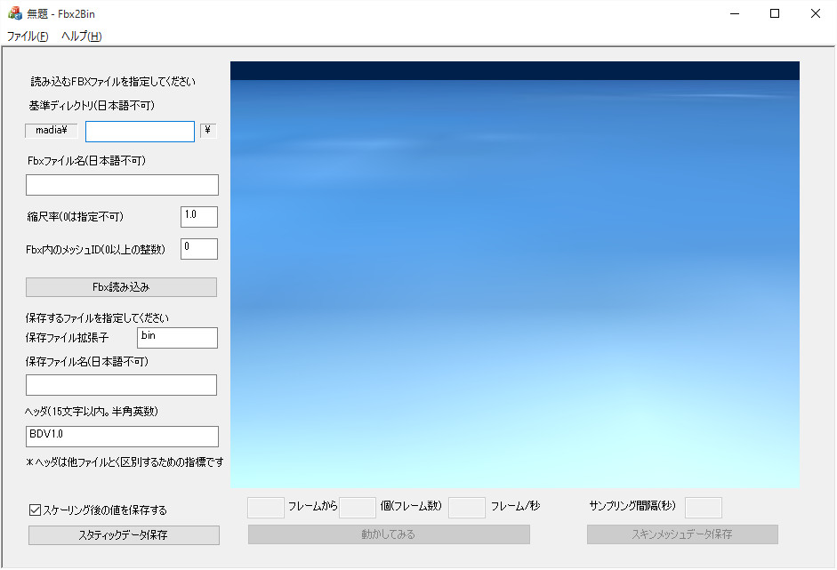
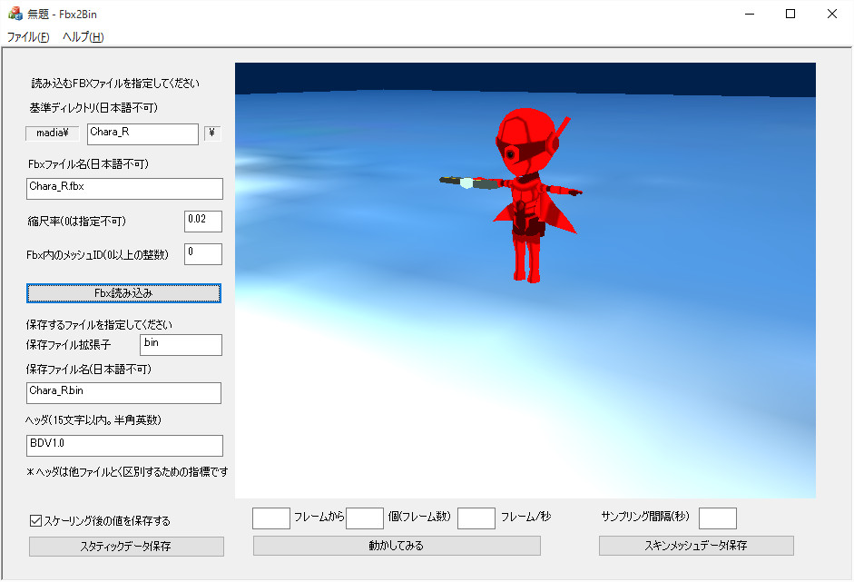
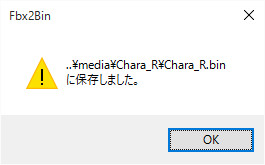

ツール
Tool01．FBXを独自のバイナリデータに変換する
ツールの必要性について考えてみよう
BaseDx2015(フルバージョン)には、FBX_SDKを利用したモデルの読み込みなどはじめ、これまで紹介してきたいろんな機能が含まれます。しかし、それらの機能は、往々にして大きなライブラリになりがちなため、最小限のライブラリとしてシンプルバージョンも用意しています。
シンプルバージョンは、FBX_SDKも内蔵されていません。しかし、３Ｄゲーム制作にはモデルの描画は、必須といってもいいでしょう。
そこで、シンプルバージョン用として、FBXファイルから、独自のフォーマットのデータを作成するツールを作成しました。
今回紹介するツールは、ツールとして最小限のことしか行いません。もし多機能なツールが必要であれば、今項で紹介するツールをカスタマイズして、独自のツールに進化させるとよいでしょう。
Fbx2Binについて
Tool01ディレクトリには、この項で紹介するFbx2Binが含まれます。まず、起動する前に、何か、テスト用のFBXファイルを用意してください。
Sample308で紹介した、Chara_R.fbxやChara_B.fbxでも構いません。このFBXファイルを、テクスチャ画像も含まれるディレクトリごと、Tool01ディレクトリのmediaディレクトリに保存してください。
mediaディレクトリにFBXファイルを配置したら、Fbx2Binを起動してみましょう。
今回のツールはMFCを使用していますので、VisualStdio2013はCommunity以上でないと起動しませんので注意してください。
起動すると以下の画面になります。

図Tool01a
ここで、まず基準ディレクトリをmediaディレクトリ内のFBXが含まれるディレクトリを記述してください。
続いて、Fbxファイル名を記述してください。
記述したら表示用のスケーリングを記述してください（デフォルト1.0になっています）。
以下の例では、Sample308のChara_R.fbxをコピーしてきて表示させたものです。

図Tool01b
コントローラを使用すると、後方からも見ることができます。Sample308のChara_R.fbxはスキンメッシュですが、ご覧のようにTポーズをしたスタティックメッシュとして表示します。
Sample308のChara_R.fbxはサイズが大きいので、スケーリングを0.02で読み込みます。
データの保存
データの保存は、スタティックメッシュでよいなら、スタティックデータ保存をクリックします。保存に成功すると、
図Tool01c
のようなダイアログが出ます。
単純ですが、スタティックメッシュについてはこれだけです。mediaディレクトリのFBXのディレクトリを見ますとChara_R.binができているのがわかります。
この項で作成したデータはDxBase2015Simple/Simple06サンプルで実装します。
こちらのサンプルは、独自のデータフォーマットのモデル（メッシュ）を読み込むサンプルです。
Fbx2Binツールと比べながら確認してください。
スキンメシュ
スキンメッシュについては「動作させてみる」「秒あたりのサンプリング間隔を指定して保存」の手順を踏みます。まず「動作させてみる」ですが、スキンメッシュにあらかじめ設定してあるアニメーション（アニメーションラインは1つだけ有効です）の、開始フレームと、開始からのフレーム数、そして、秒あたりのフレーム数を指定して、動かしてみるボタンをクリックします。サンプルのChara_R.fbxは,全体で20フレームなので、その値を指定しています。ゆっくり動くように、秒あたりのフレーム数は10としています。以下のような画面になります。

図Tool01d
動作を確認したら、「秒あたりのサンプリング間隔を指定して保存」です。サンプリング間隔(秒)に値（ここでは0.02を指定）して、スキンメッシュデータ保存ボタンをクリックすると、先ほどのようなダイアログが出て保存できます。
ここで作成したスキンメッシュデータはDxBase2015Simple/Simple07サンプルで表示しています。
スキンメシュデータの仕組み
スキンメッシュのデータは、fbxの作成時の作成方法によって、どのような保存の仕方をすれば効率よく独自データ化にできるか、を考える必要があります。このツールでは、サンプリング方式をとっています。つまりフレーム間の補間をFBX_SDKに任せて、その結果をデータ化しています。ですので、サンプリング間隔が小さければ、よりfbxデータに忠実なアニメーションになります。しかし、細かすぎるとデータが大きくなります。
再生側では、DxBase2015Simple/Simple07サンプルで行っているように、サンプリングされたデータを通常の線形補間を使って間を埋めます。補間方法が単純なので、サンプリング間隔が大きいと、fbxデータとは離れた再生になります。
ここで指定した0.02は、つまりは50分の1秒単位で取得します。取得するのはボーン単位の行列です。動作させてみると約2秒でひとまわりするデータなので、100個のサンプリングになります。ボーン数は22個なので、全部で2200個の行列が保存されます。保存データサイズは約400キロバイトです。もとのfbxが1200キロなので、約3分の1になった計算になります。
今項では、コード説明は省略いたします。DxBase2015Simple/Simple06、Simple07サンプルの説明を参照してください。
またMFCの扱いに慣れてないと、最初は理解しにくいかもしれませんが、慣れてくると、MFCは非常に使いやすいライブラリであることがわかると思います。